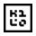

Bring your sessions
to OpenClaw.
Pick a conversation from your coding harness, clean it locally, and share the reviewed messages with your OpenClaw team.
Read from
Direct or via acpx
- OpenClaw
- Claude Code
- Codex
- OpenCode
- Gemini CLI
 Pi
Pi
Via acpx · sessions saved in this project
 Cursor
Cursor GitHub Copilot
GitHub Copilot Goose
Goose- Kiro
- Kimi
 Qwen Code
Qwen Code- Antigravity
- Ante
 DeepSeek Harness
DeepSeek Harness Devin
Devin- Factory Droid
- fast-agent
- fx
 Grok Build
Grok Build- iFlow
 Junie
Junie
Kilo Code- MCode
- Mux
 Octomind
Octomind- Poolside
- Qoder
- Trae
- ZeroClaw
Also accepts a text file, stdin or a Beam packet.
Export to
OpenClawShare a snapshot with your team ↗Other destinations
- Native session
- Codex · OpenCode
- Staged reference
- Claude Code · Pi · acpx profiles
- Session file
- Gemini CLI
- Markdown
- Any tool that accepts a file
From OpenCode to OpenClaw
This example uses an OpenCode session saved through acpx 0.22.0. Run the commands in the project where acpx recorded the session. For a direct export from OpenCode, use --from opencode instead.
Install Beam v0.1.0 on your PATH. Enable the receiving plugin and set BEAM_AUTH_TOKEN to your Gateway bearer before sharing.
# Choose a session from this project
beam list --from acpx:opencode
beam pack --from acpx:opencode --session SESSION_ID \
--out task.beam.json
# Prepare and inspect the v1 packet
beam convert task.beam.json --packet-version 1 --out task.v1.json
beam inspect task.v1.json
# Replace the host with your Gateway
beam share task.v1.json \
--to https://gateway.example/api/v1/beam/sessionsOpen the url in the receipt to read the snapshot in OpenClaw. Sharing starts no model turn.
Try it with a file instead
Use a POSIX shell to create a packet without a harness. Continue with the conversion and sharing commands above.
printf '%s\n' 'Keep quoted newlines in the CSV parser.' |
beam pack --from file --session - --out task.beam.json
beam render task.beam.jsonWhat travels
The packet carries visible messages. Your workspace, tools, and credentials stay with their agent. The cleaner looks for common secrets, email addresses, and local paths. Read the result before you send it.
Source message
Send the CSV fix to alex@example.test.
In the packet
Send the CSV fix to [REDACTED_EMAIL].
Bring the files, too
A portable bundle carries the reviewed conversation and the images, documents, audio, or video you select. Open the preview offline, or extract the original files from the ZIP.
The sample pairs Beam’s cover artwork with its design note. Bundling is available on Beam main. OpenClaw share links carry the text snapshot.
Harness support
Direct adapters read native history. For an acpx recording, use acpx:PROFILE from the same project. The packet is marked partial because acpx retains a bounded history. Give the destination a new instruction when you want a reply. Run beam doctor --json to check your installation.
| Harness | What you can do |
|---|---|
| Codex | Export a thread or open a new one with the packet in model context. Earlier turns do not appear individually in the UI. |
| OpenCode | Export a session or open a new one with the history in a single reference message. |
| Claude Code · Pi | Export selected history or stage a reference for the first explicit instruction. |
| Gemini CLI | Import a staged session file, then finish login in Gemini. |
| acpx 0.22.0 | Read a selected ACP session and stage a reference. Continue manually in the target agent. |
| OpenClaw | Export a selected Gateway session or share a packet with an enabled receiver. The Gateway checks each caller’s access. |
| Local file | Pack selected text or render Markdown to attach in another tool. |
Tested versions and fixture results
The versioned harness tests cover native copies, staged references, and manual imports. The Gateway tests cover private links, credential rotation, restart, and release.
Connect OpenClaw
On the receiving Gateway, enable Beam and restart. Give the sender the HTTPS endpoint and a credential allowed to publish. Readers sign in to the Gateway to open shared snapshots.
OpenClaw setup# On the receiving Gateway
openclaw plugins enable beam
openclaw gateway restartCloudflare Access and receiver versions
Add --cloudflare-login to sign in through cloudflared. The Gateway still checks its own credential. The README covers service tokens and existing Access tokens.
The quickstart uses the v1 receiver in OpenClaw 2026.11.10. With a v2 Gateway, inspect task.beam.json and share it directly to the Gateway base URL. Use the returned private link to open it.